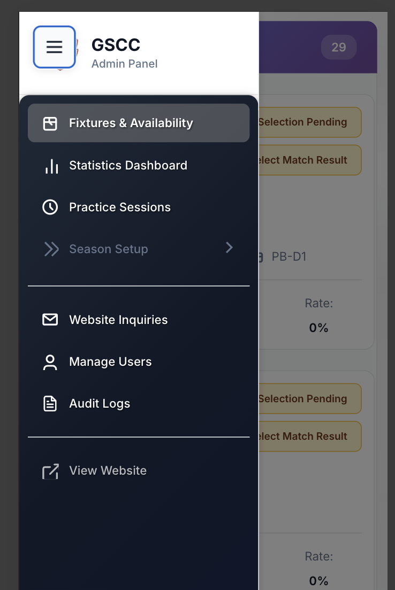
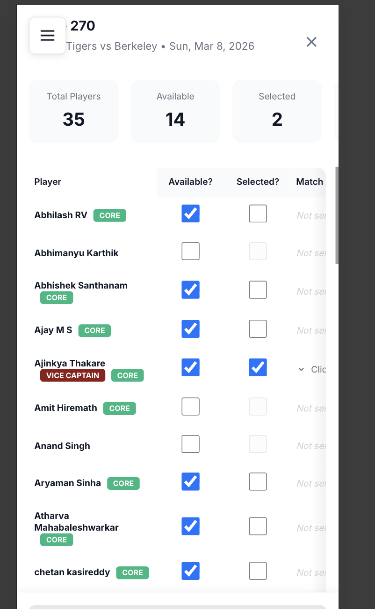
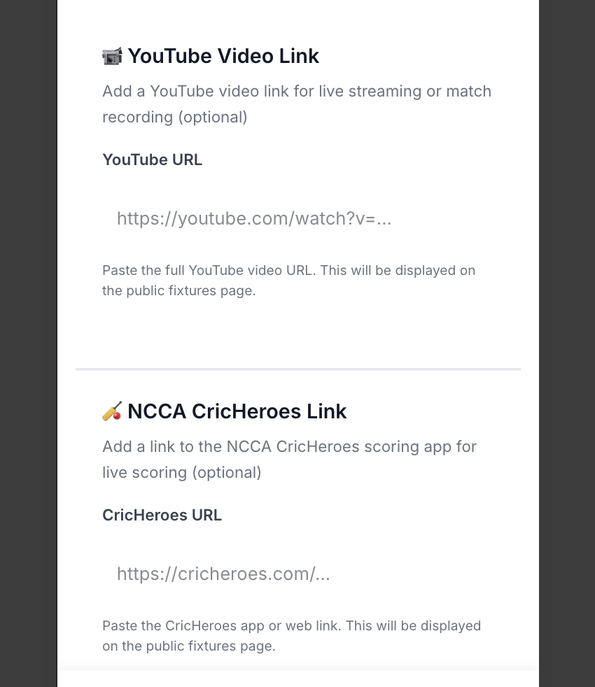
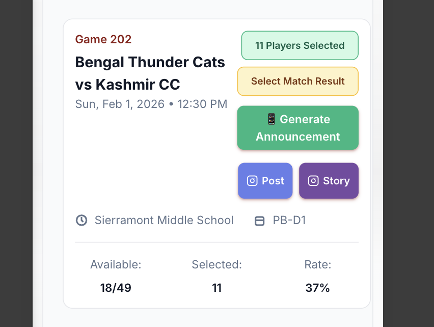
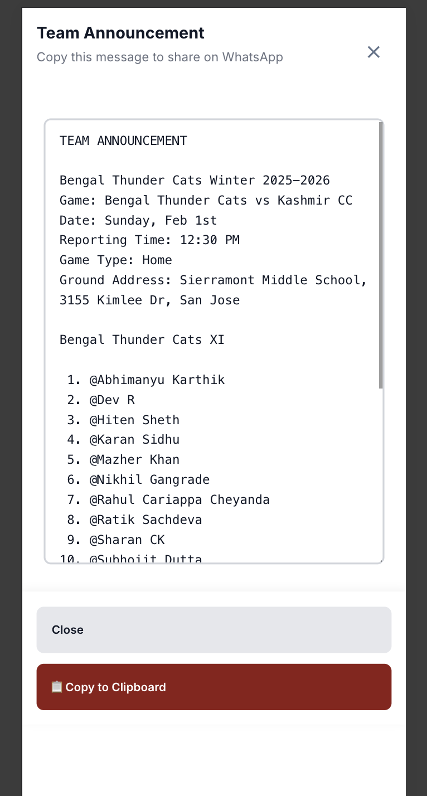
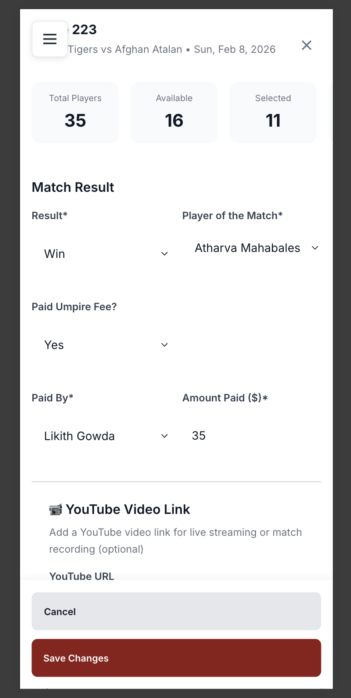

Availability Portal - Quick Admin Guide
A visual guide for managing team selection and match announcements
1. Access Fixtures & Availability
Open the admin menu and click "Fixtures & Availability"

2. Select Players (11 Required)
Click on a fixture to open the availability modal.

Steps:
- Review who marked themselves Available (blue checkmark)
- Check the "Selected?" box for 11 players
- Click "Save Changes" (bottom of modal)
Player Badges:
- VICE CAPTAIN - Team vice-captain
- CORE - Core team member
3. Assign Match Duties (Optional)
Click "Match Duties" column for any selected player to assign:
- Warm Up, Water Assignment, Scoring, Team Kit
- Ice, Ground Set-up, Ground Cleaning, Video Broadcast
Note: Each duty can only be assigned to one player.
Click "Save Changes" when done.
4. Add Match Links (Optional)
Scroll down in the modal to add:

- YouTube URL - Live stream or match recording
- CricHeroes URL - Live scoring link
Click "Save Changes" after adding links.
5. Generate Team Announcement
Once 11 players are selected:

- Click "📱 Generate Announcement" button
- Review the announcement with all match details

- Click "📋 Copy to Clipboard"
- Paste in WhatsApp team group
- IMPORTANT: Replace
@PlayerName with actual WhatsApp contacts so players get notified
6. Record Match Results (After Match)
Open the fixture modal and scroll to "Match Result" section:

Required:
- Result - Win/Loss/Tie/No Result
- Player of the Match - Select from dropdown
Optional (if applicable):
- Paid Umpire Fee? - Yes/No
- Paid By - Which player paid
- Amount Paid ($) - Enter amount
Click "Save Changes" to record.
7. Social Media Sharing
Instagram Post & Story buttons:
- 📷 Post - Create Instagram post
- 📷 Story - Create Instagram story
⚠️ Currently not working - Use manual posting for now.
⚠️ Important Reminders
- ALWAYS click "Save Changes" before closing any modal
- Replace @ mentions with actual WhatsApp contacts when posting announcements
- Select exactly 11 players for each match
- Record match results after every game for accurate statistics
Quick Workflow
Before Match:
→ Select 11 players → Assign duties → Add links → Save → Generate announcement → Post to WhatsApp
After Match:
→ Open fixture → Select result → Choose Player of Match → Enter umpire fees (if paid) → Save